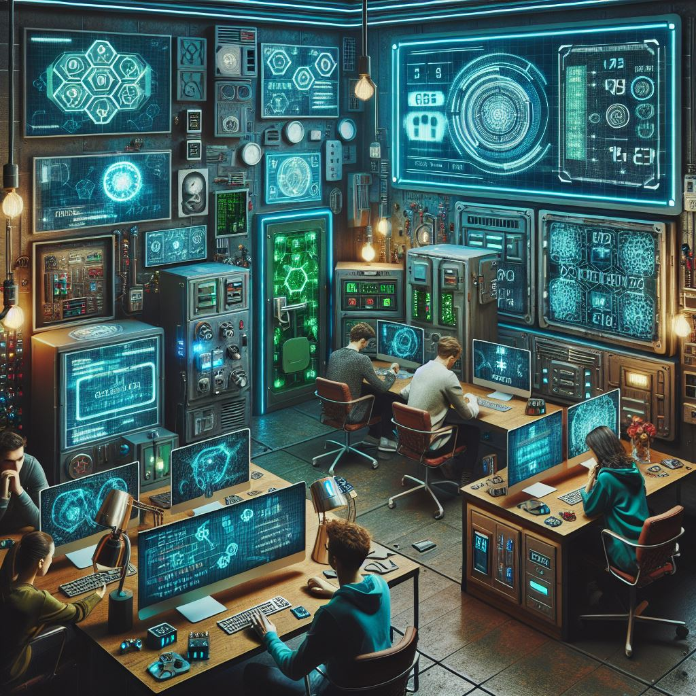

L'Inseg Forum 2024 ha reunit els principals experts del sector digital per presentar les novetats en seguretat informàtica. Durant l'esdeveniment, es van mostrar les últimes solucions per protegir les dades i afrontar els reptes de la seguretat digital.
Entre les activitats destacades, el "Cyber Escape Room" va permetre als participants resoldre enigmes relacionats amb atacs cibernètics, mentre que els experts van debatre sobre la seguretat de les infraestructures crítiques.